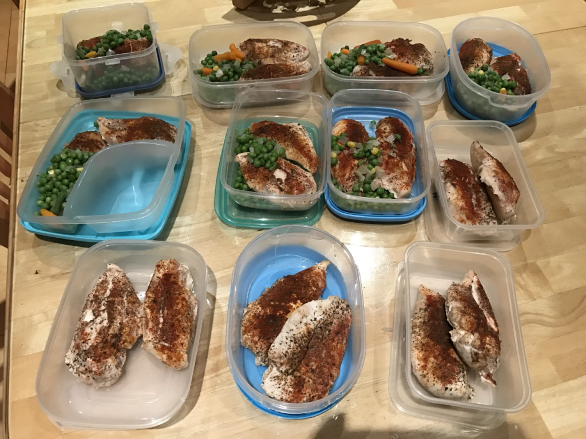
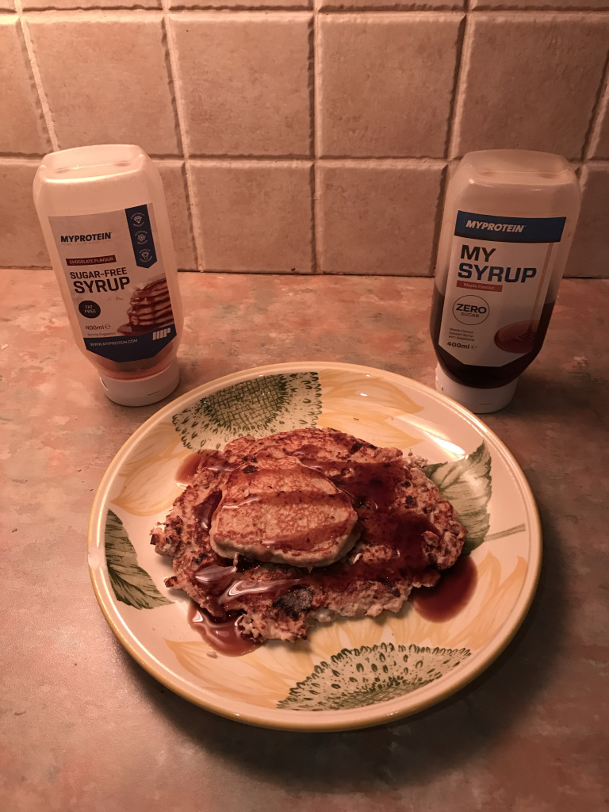

People have become more health conscious than ever and as we advance in technology, inventions reflect this, making it easier and easier for us to keep track of the foods we eat. Apps such as “MyFitnessPal” enable us to set realistic calorie goals and aid us in hitting our targets. How strict you intend on sticking beneath your caloric needs is completely up to you. For example, you can be a casual user of the system and scan the good’s bar code to identify it’s nutrients and decide for yourself if the food is too calorie dense to eat. Otherwise, for those serious about their goals, you can track every gram of ketchup on your meal.
If you don’t have meals prepared for your week, you will more than likely turn to a sugary, more unhealthy alternative when you become hungry. To combat this, I’d suggest preparing meals each Sunday for the upcoming week, this ensures you will stay on track with your diet along with saving time and effort. You can freeze the meals for later in the week and defrost them the night before to maximise taste if you wish.

When striving for a healthy diet, foods no longer need to be boring and bland. There is so much room for variation to keep your meals exciting and fresh. For example, last night I made some healthy pancakes (see picture and ingredients below)

- 50g Porridge Oats
- 100g Cottage Cheese
- 2 Egg Whites
- 1 teaspoon of low-calorie sweetener
- Drop of vanilla essence (Optional)
- Cinnamon (Optional)
- Low-calorie Syrup (Optional)
Method:
Firstly, place the pan on the hob at medium heat and allow it to heat up. Blend 50g of oats and place into a large bowl. Add 100g cottage cheese, 2 egg whites and a teaspoon of low-calorie sweetener and mix until it’s a thick smooth paste. Add any of the optional ingredients to the large bowl before pouring contents onto the already warm pan. Flip and continue to cook evenly on both sides. Once complete, place the pancake on a plate, coat with low calorie syrup and enjoy!
| Calories | Carbohydrates | Protein | Fat |
|---|---|---|---|
| 341cals | 50g | 24g | 5g |